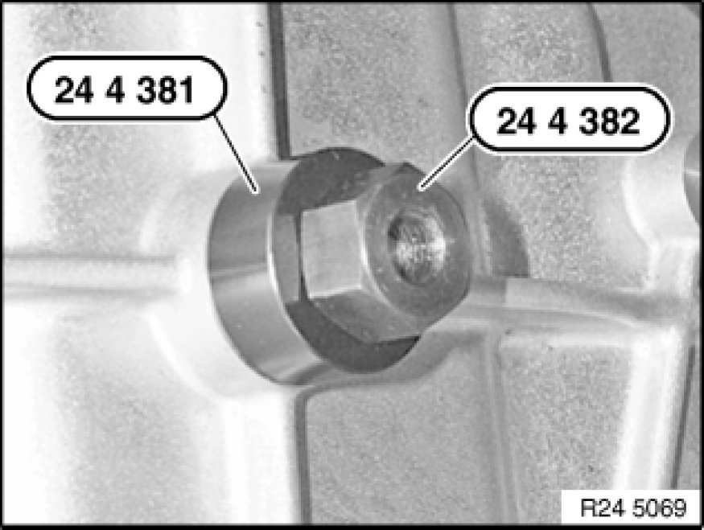

Replacing Selector Shaft Seal (GA6L45R)
24 14 003 - Replacing selector shaft seal (GA6L45R)

Special tools required:
- 24 4 381 24 4 380 Bushing with Nut
- 24 4 382 24 4 380 Bushing with Nut
- 24 5 361 24 5 360 Fixture
- 24 5 362 24 5 360 Fixture

Important!
After completion of work, check transmission fluid level Procedures.
Use only the approved transmission fluid.
Failure to comply with this requirement will result in serious damage to the automatic transmission!

Necessary preliminary tasks:
- Remove heat shields
Slacken nut (1).
Take off holder (2).
Tightening torque 24 51 1AZ [1][2]Shift Linkage, A/T.
After completing work:
Adjust shift lever.
Screw in special tool 24 5 361 24 5 360 Fixture until it is firmly connected with shaft seal.
Screw special tool 24 5 362 24 5 360 Fixture onto special tool 24 5 361 24 5 360 Fixture and tighten down.
This pulls the shaft seal out of the transmission housing.

Oil sealing lip on shaft seal.
Screw in shaft seal with special tools 24 4 381 24 4 380 Bushing with Nut and 24 4 382 24 4 380 Bushing with Nut as far as it will go.